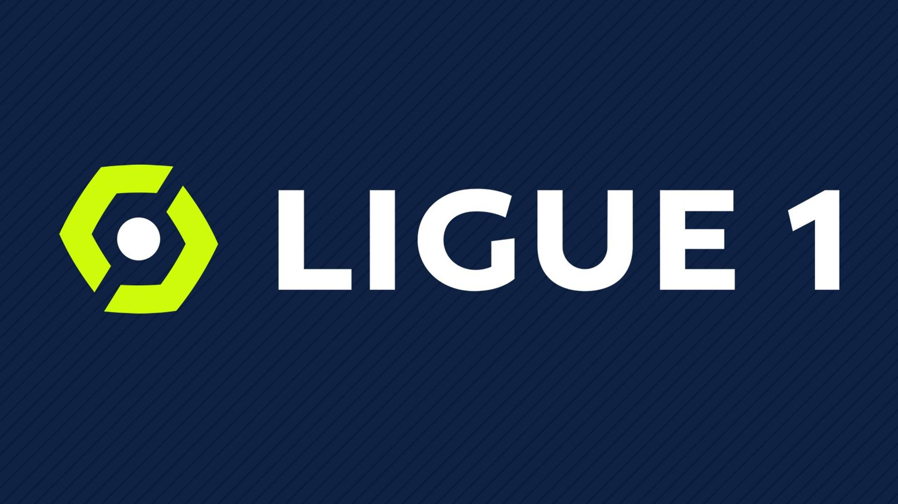

Francia
La Ligue 1 Uber Eats por motivos de patrocinio, y oficialmente como Campeonato de fútbol francés (en francés: Championnat de France de football) es la primera división del sistema de ligas del fútbol francés organizada por la Ligue de Football Professionnel.
Comenzó a disputarse en 1932 bajo el nombre de Division nationale, cambiando en 1972 a Division 1 y desde 2002 recibe su nombre actual de Ligue 1. Está formada por dieciocho clubes, que disputan un total de 340 partidos (34 cada club), en cada temporada que se extiende entre los meses de agosto y mayo. Los dos últimos clasificados al final del campeonato, descienden a la Ligue 2. El antepenúltimo clasificado de la disputará un play-off de promoción con el tercer clasificado de la Ligue 2, en partidos de ida y vuelta. El ganador tendrá un cupo en la Ligue 1de la siguiente temporada.
